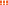
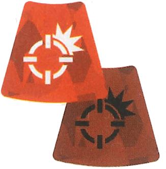
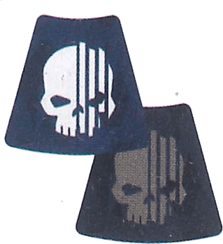

Reglas de Juego
Manual de Referencia Completo
I. Principios Básicos
Medición de Distancias
En Kill Team, las distancias se miden en pulgadas ("). Puedes medir distancias en cualquier momento de la partida. Al medir la distancia entre dos miniaturas, mide siempre desde la parte más cercana de la peana de una miniatura hasta la parte más cercana de la peana de la otra miniatura.
Tiradas de Dados (D6)
El juego utiliza dados estándar de seis caras (D6). Algunas reglas pueden pedirte tirar un D3; en ese caso, tira un D6 y divide el resultado a la mitad, redondeando hacia arriba (1-2 = 1, 3-4 = 2, 5-6 = 3).
Repeticiones (Re-rolls)
Algunas reglas te permiten volver a tirar un dado. Nunca puedes volver a tirar un dado más de una vez. Si tienes que repetir una tirada de varios dados, puedes elegir cuántos de ellos repites, pero el segundo resultado es definitivo.
Modificadores
Todas las repeticiones se aplican antes de aplicar modificadores (como +1 o -1 a la tirada). Un resultado natural (sin modificar) de 6 siempre es un éxito, y un resultado natural de 1 siempre es un fallo, sin importar los modificadores.
Modificación de Atributos: Cuando una regla modifica el atributo de un agente, primero aplica todas las multiplicaciones y divisiones (redondeando hacia arriba) y luego aplica sumas y restas.
Cada miniatura en tu Kill Team es un Agente (Operative) y posee una Tarjeta de Datos que detalla sus características y el armamento que porta.
Atributos del Agente
| MOV. /MOVE | LPA / APL | SALV. / SAVE | HERIDAS / WOUNDS |
|---|---|---|---|
| Movimiento | Límite de Puntos de Acción | Salvación | Heridas |
- Movimiento (MOV): La distancia máxima que puede recorrer el agente al realizar una acción de Reposicionar o Retroceder.
- LPA (Límite de Puntos de Acción): La cantidad de Puntos de Acción (PA) que el agente genera al activarse para realizar acciones.
- Salvación (Salv.): El número objetivo que debe igualar o superar en los dados de defensa para salvar un impacto.
- Heridas: La cantidad de daño que puede soportar antes de quedar Incapacitado (retirado del juego). Si sus heridas actuales son menores a sus heridas máximas el agente se encuentra Herido. Si sus heridas se reducen a menos de la mitad de sus heridas maximas, el agente queda Lesionado.
Perfil de Armas
Las armas se dividen en ataques a Distancia (

) y Cuerpo a Cuerpo ().Atributos del Agente
| NOMBRE / NAME | ATAQ. / ATK | IMP. / HIT | DAÑO / DMG | REGLAS DE ARMAS / WR |
|---|---|---|---|---|
| Nombre del arma | Ataque | Impacto | Daño Normal/Daño Crítico | Reglas de Armas |
- Nombre: El nombre que figura el arma en conjunto a el logotipo que señaliza su tipo.
- Ataque (ATAQ): La cantidad de dados que tiras al atacar con esta arma.
- Impacto (IMP.): El número que debes igualar o superar para considerar el dado como un impacto éxitoso.
- Daño: Se muestra como dos números (ej. 3/4). El primer número es el daño normal y el segundo es el daño crítico (cuando el dado es un 6 natural).
- Reglas de Armas: Modificadores o condiciones que tiene el arma a la hora de utilizarse (ej. Letal 5+ hace que los resultados 5 se consideren éxitos críticos)
Todo agente en la killzone debe tener siempre una ficha de orden asignada, la cual indica su postura de combate actual. Al inicio de la activación de un agente en cualquier punto de inflexión, el jugador puede decidir cambiar su orden actual.

Orden: Trabarse (Engage)El agente asume una postura agresiva, exponiéndose para realizar ataques.
- Puede realizar acciones ofensivas como Disparar o Cargar.
- Desventaja: Incluso si está detrás de cobertura ligera válida, sigue siendo un objetivo legal para los disparos enemigos siempre que sea visible, ya que asoma para atacar.

Orden: Ocultarse (Conceal)El agente se agacha y utiliza el entorno para pasar desapercibido y protegerse.
- Beneficio: Si se encuentra a 1" o menos de terreno que otorgue cobertura y en la línea de ataque enemigo, no puede ser seleccionado como objetivo de ataques a distancia (salvo por terreno aventajado o armas indirectas).
- Limitación: No puede realizar acciones de Disparar, Cargar o Combatir.
Agentes Trabados en Combate
No confundir la orden de "Trabarse" con estar "Trabado en Combate". Un agente se considera Trabado en Combate si se encuentra dentro del rango de Zona de Control (1" o menos) de la peana de un agente enemigo. Un agente trabado en combate no puede realizar acciones de Reposicionar, Correr, Cargar ni Disparar (puede realizar acciones de Combatir, Retroceder o cualquier otra acción que no se vea interrumpida por estar Trabado en Combate).
Para que un agente activo pueda seleccionar a un objetivo enemigo (ya sea para Disparar o para algunas habilidades), el enemigo debe estar en su Línea de Visión. Este es un proceso estricto de comprobación de cuatro pasos.
El objetivo está en la Línea de Visión SÍ Y SOLO SÍ cumple TODAS las siguientes 4 condiciones:
-
1. Debe ser Visible
Debes poder trazar una línea imaginaria e ininterrumpida de 1 milímetro de grosor desde la cabeza de la miniatura del atacante hasta cualquier parte de la miniatura objetivo.
-
2. NO debe estar en Cobertura Ligera Válida (si tiene orden Ocultarse)
Si el objetivo tiene una orden de Ocultarse, no puede ser blanco valido si está en cobertura. Un agente está en cobertura si las líneas de cobertura del atacante cruzan un elemento de terreno (ligero o pesado) y el objetivo se encuentra a 1" o menos de ese terreno.
-
3. NO debe tener agentes amigos en su zona de control
Si el objetivo se encuentra Trabado en Combate, no puede ser blanco valido. Un agente está Trabado en Combate si se encuentra a 1" o menos de un agente enemigo.
-
4. NO debe estar Ofuscado (Obscured)
Para comprobar esto, traza las líneas de cobertura (un cono invisible desde cualquier punto de la peana del atacante a todos los puntos de la peana del objetivo). Si estas líneas cruzan un elemento de Terreno Pesado (Heavy), el objetivo está ofuscado siempre que la distancia desde ese terreno hasta el objetivo es mayor a 1".
Si el objetivo está a 1" o menos del terreno pesado que bloquea la visión, cuenta como asomado o interactuando con el terreno, por lo que NO está oscurecido.A diferencia de las otras 3 condiciones, es posible Disparar a un agente ofuscado, sin embargo el disparo del arma se vera modificada con las siguientes restricciones:
Todos los críticos se consideran normales y no pueden cambiarse
El atacante retira 1 de sus éxitos normales y se toma como un fallo (debiendo de haber por lo menos un exito normal para que esto suceda)
Beneficio Defensivo de la Cobertura
Incluso si un agente tiene la orden de Trabarse y es un blanco valido, la Cobertura (estar a 1" de un terreno intermedio) le permite al defensor retener automáticamente un dado de defensa como éxito normal sin necesidad de tirarlo durante un ataque a distancia.
II. Definición de Conceptos
El posicionamiento de las miniaturas en la killzone define cómo pueden interactuar con los enemigos y los objetivos.
La Zona de Control es el área de amenaza inmediata alrededor de un agente. Se extiende a 1" o menos de distancia desde cualquier punto de la peana de la miniatura en todas las direcciones.
Un agente se considera Trabado en Combate cuando se encuenta en la zona de control de un agente enemigo visible. Estando en este estado, un agente no puede realizar acciones de Reposicionar, Correr, Cargar ni Disparar.
Es vital distinguir mecánicamente entre el estado de Lesionado y el estado de Herido, ya que tienen implicaciones de reglas totalmente distintas.
-
EstadoLesionado (Wounded)
Un agente adquiere este estado cuando sus Heridas actuales son iguales o inferiores a la mitad de su atributo de Heridas máximo. Este estado impone penalizadores universales inmediatos:
- Empeora el atributo de Impacto de todas sus armas (A Distancia y Cuerpo a Cuerpo) en 1 (p. ej., un impacto de 3+ se convierte en 4+).
- Resta 2" de su atributo de Movimiento (MOV.).
-
EtiquetaHerido (Injured)
A diferencia de "Lesionado", "Herido" es simplemente una etiqueta condicional (tag). Un agente está Herido desde el momento en que ha perdido al menos 1 Herida. Por sí solo no impone penalizadores, pero sirve como detonante para activar reglas especiales o tácticas de facciones específicas (p. ej., Ardid de Estrategia LA CAZA NEGRA de GARRA NEMESIS). En caso de que el agente recupere la totalidad de sus heridas perdidas, deja de considerarse "Herido"
Los Terrenos Aventajados son posiciones elevadas estratégicas (generalmente a más de 2" de altura) que otorgan una superioridad táctica abrumadora sobre la killzone.
Beneficio del Tirador Elevado
Si un agente se encuentra sobre un Terreno Aventajado y tiene una orden de Trabarse (Engage), puede ignorar el beneficio de "Ocultarse" de los agentes enemigos que se encuentren en un nivel inferior, siempre que estos dependan de Cobertura Ligera. El objetivo será tratado como si tuviera una orden de Trabarse para propósitos de determinar si es un blanco válido.
El agente ademas tendra la regla de armas Certera 1 mientras se mantenga en el Terreno Aventajado.
Nota: El Terreno Aventajado NO anula el beneficio de Ocultarse si el enemigo está escondido detrás de Terreno Pesado (Heavy Terrain).
Todo agente genera Puntos de Acción (PA) basados en su atributo LPA. Aquí se definen las acciones básicas disponibles para cualquier miniatura:
| Acción | Costo | Descripción |
|---|---|---|
| Reposicionar (Reposition) | 1 PA |
Mueve el agente a un punto en que pueda colocarse y que no esté más allá del valor de su atributo Movimiento (MOV.). No puede moverse por la zona de control de agentes enemigos Un agente no puede realizar esta acción si está en la zona de control de un enemigo, o durante la misma activación que ha realizado la acción de Cargar o Retroceder. |
| Correr (Dash) | 1 PA |
Se mueve igual que en Reposicionarse, pero el agente no se puede mover más de 3" ni trepar. Un agente no puede realizar esta acción si está en la zona de control de un agente enemigo, o durante la misma activación que ha realizado la acción de Cargar. |
| Cargar (Charge) | 1 PA |
Se mueve igual que en Reposicionarse, pero el agente se puede mover 2" adicionales. Se puede mover por la zona de control de un agente enemigo y debe terminar el movimiento ahí. Si entra en la zona de control de un agente enemigo en la que no hay ningún otro agente amigo, no puede abandonar la zona de control de ese agente. Un agente no puede realizar esta acción mientras tenga una orden de ocultarse, ni si ya se encuentra en la zona de control de un agente enemigo, o durante la misma activación en la que haya realizado la acción de Reposicionarse, Correr o Retroceder. |
| Disparar (Shoot) | 1 PA |
arreglar esto Un agente no puede realizar esta acción si está en la zona de control de un agente enemigo, o si tiene una orden de ocultarse. |
| Combatir (Fight) | 1 PA |
arreglar esto Un agente no puede realizar esta acción a menos que haya un agente enemigo en su zona de control. |
| Retroceder (Fall Back) | 2 PA |
Se mueve igual que en Reposicionarse, pero el agente puede mover a través de la zona de control de agentes enemigos, aunque no puede terminar ahí el movimiento. Un agente no puede realizar esta acción a menos que haya un agente enemigo en su zona de control. No puede realizar esta acción durante la misma activación en la que ha realizado la acción de Reposicionarse o Cargar. |
El jugador cuyo agente está realizando la acción es el atacante. El jugador que controla el objetivo es el defensor
1
El atacante elige una de las armas a distancia de su agente.
2
El atacante elige un agente enemigo que sea un blanco válido para el agente activo y que no tenga agentes amigos en su zona de control.
3
El atacante tira sus dados de ataque, tantos D6 como el atributo Ataques del arma. Cada resultado igual o superior al atributo Impactar del arma es un éxito y se guarda. Los resultados inferiores son fallos y se descartan.
4
El defensor tira tres dados de defensa, 3D6. Cada resultado igual o superior al atributo Salvación del blanco es un éxito y se guarda. Los resultados inferiores son fallos y se descartan. Si el blanco está a cubierto, el defensor puede guardar un éxito normal sin tirarlo.
5
El defensor resuelve los dados de defensa con éxito, asignándolos para bloquear los dados de ataque con éxito.
- Un éxito normal puede bloquear un éxito normal.
- Dos éxitos normales pueden bloquear un éxito crítico.
- Un éxito crítico puede bloquear un éxito normal o un éxito crítico.
6
El atacante resuelve cada dado de ataque no bloqueado (si los hay) para infligir daño al blanco.
- Un éxito normal inflige tanto daño como el atributo Daño normal del arma (1.er valor del atributo Daño).
- Dos éxitos normales pueden bloquear un éxito crítico.
- Un éxito crítico puede bloquear un éxito normal o un éxito crítico.